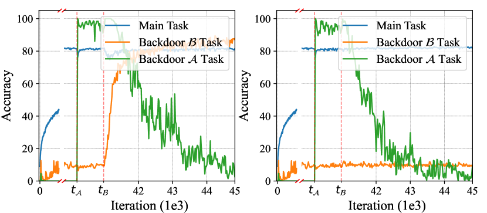
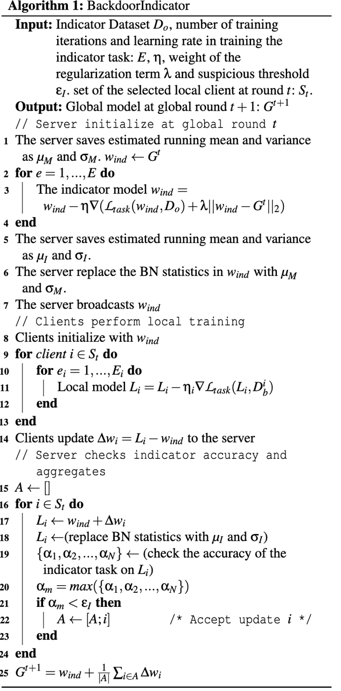
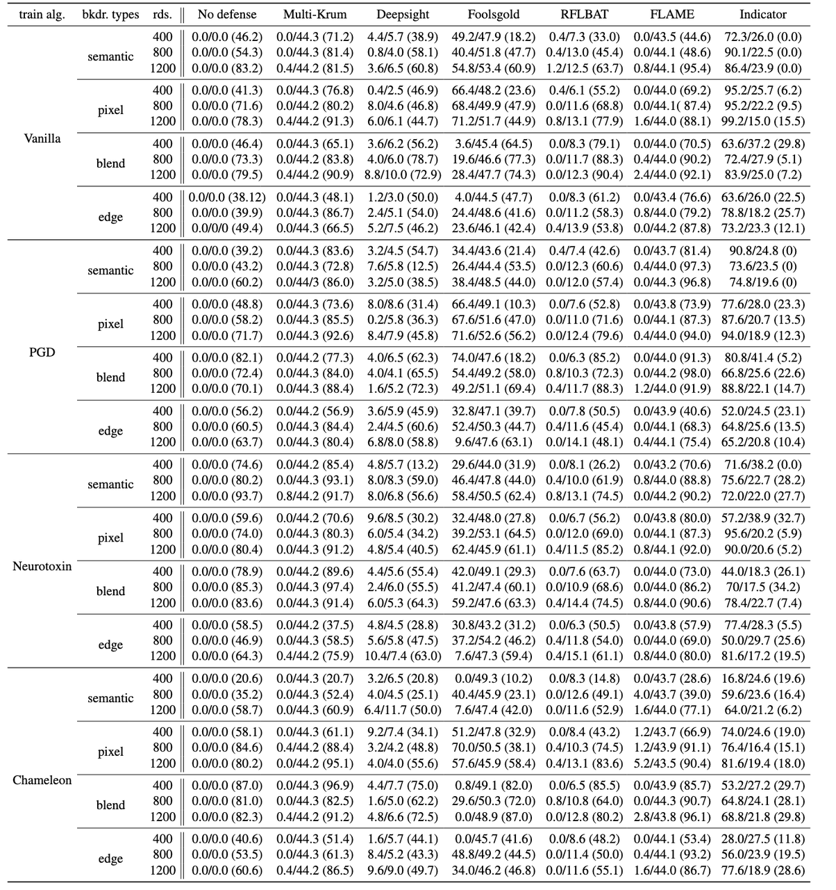

BackdoorIndicator - Leveraging OOD Data for Proactive Backdoor Detection in Federated Learning
BackdoorIndicator: Leveraging OOD Data for Proactive Backdoor Detection in Federated Learning
BackdoorIndicator: 利用分布外（OOD）数据在联邦学习中进行主动后门检测
USENIX Security 2024：arvix
Southeast University Songze Li；HKUST(GZ) Yanbo Dai（东南大学+香港科技大学广州）

介绍
连续植入具有相同目标标签的不同后门任务，后续的后门能够显著帮助维持先前植入后门的准确率，而不是将其覆盖或销毁。这是因为后门攻击本质上指一种分布外（OOD, out-of-distribution）任务，植入后门的过程，实际上是在不破坏原有正常ID映射的情况下，强行建立了一条从OOD特征（即后门触发器）到目标标签的额外隐蔽通道（映射）。
并且，针对同一任务目标的 OOD 映射具有相同特性。
假设有两个后门 A 和 B，具有相同的目标
如果停止植入后门A且不植入后门B：模型只接受正常的良性数据训练，在这个过程中，模型只会不断强化正常的ID映射，而之前建立的OOD映射，也就是后门A会逐渐被模型遗忘。
如果停止植入后门A，但开始植入后门B：后门B同样是一个带有OOD特征的样本，且指向相同的目标标签。虽然触发器变了，但模型依然被迫在某种OOD特征与该目标标签之间保持映射通道活跃，这样特征会被一定程度上保留。
因为后门A和后门B相对于良性数据来说，都具有分布外的共同特性，后门B的训练让模型保持了对分布外特征的敏感性。因此，维持后门B的分布外映射，顺带也保全了之前建立的后门A的分布外映射，使其免于被正常的良性训练数据冲刷掉
提出了一种主动防御机制。服务器在下发模型前，先注入一个基于分布外数据的“指示器任务”。由于后门攻击本质上也是在训练 OOD 映射，恶意客户端在训练自己的后门时，会“顺便”维持服务器注入的指示器任务准确率，而良性客户端则会遗忘它。通过检查指示器，达到检测攻击的目的。
解决了现有防御手段，如基于范数裁剪、距离聚类在低中毒学习率、Non-IID 数据分布，这样隐蔽攻击条件下失效的问题。
在各种攻击设置下，该方法均取得了最高的真阳性率（TPR）和最低的假阳率（FPR），且不依赖良性根数据。
TPR (True Positive Rate) - 真阳性率
- TPR 反映了检测机制识别对抗性后门的能力，它的计算方式是：被正确识别出的恶意更新数量 / 恶意更新的总数。TPR 越高越好，数值越高，系统检测出后门攻击的能力越强。
FPR (False Positive Rate) - 假阳性率
- FPR 指示了检测机制区分后门更新和良性更新的能力，它的计算方式是：被错误分类为恶意的良性客户端数量 / 良性更新的总数。FPR 越低越好。数值越低，说明判错的后门少。
BA (Backdoor Accuracy) - 后门准确率
- 当攻击者停止投毒（注入后门）时，后门任务在全局模型上的准确率。越低越好，BA 越低，说明尽管攻击者拼命想植入后门，但防御机制有效地阻止了后门在全局模型中生效。
背景
在联邦学习中，恶意客户端可以通过上传中毒的局部模型，在全局模型中植入后门。这种攻击非常隐蔽，只在特定触发器出现时才导致误分类。
目前的防御主流是被动检测，即检查上传参数的统计特征（如欧氏距离、余弦相似度、L2范数等）。
痛点在于
统计特征易伪造： 如果攻击者使用较小的学习率，或者在高度 Non-IID的场景下，恶意更新的参数分布会和良性更新非常接近，导致统计防御失效。
防御性能不稳定： 如 FLAME 等方法，在攻击隐蔽时，TPR会迅速掉到0。
文章创新点
作者发现，如果在模型中先后植入两个目标标签相同的后门任务，即使触发器不同，后植入的任务有助于维持先植入任务的准确率 。 这种机制也有一个前提，不要进行批归一化（Batch Normalization, BN）统计量偏移。
如果直接去测，可能会觉得后门A的准确率在后门B加入后还是下降了，这是由批归一化（Batch Normalization, BN）统计量偏移引起的。因为训练数据从后门A变为了后门B，BN层估算的均值和方差发生了改变 。一旦在评估时使用之前保存的正确BN统计量来消除这种偏移，就会发现后门A的准确率被极其显著地维持住了。
作者提出，良性任务是学习分布内（In-Distribution, ID）特征，而后门任务是强行建立样本，通常是 OOD（out-of-distribution） 的，与目标标签的映射。
良性客户端： 在训练 ID 数据时，会发生灾难性遗忘，导致对 OOD 任务的准确率下降。
恶意客户端： 为了植入后门，必须维护这种 OOD 映射能力。因此，恶意客户端在训练自己的后门时，会无意中保护了服务器注入的 OOD 指示器任务。
注：
批归一化
是一种广泛应用于加速和稳定深度学习模型训练的技术，它在训练期间使用当前批次数据的经验均值和方差来标准化输出，并在推理和测试阶段使用整个训练过程中积累的均值和方差的滑动平均值。
在本文中如果不处理 BN 偏移，当模型训练数据的分布发生改变，例如从训练后门A变为训练后门B时，模型内部估计的滑动均值和方差会逐渐偏离原来任务的数据分布，导致当前保存的统计量不再适用于评估模型在旧任务上的真实表现。结果就是后植入的后门无法维持前一个后门的准确率。
BackdoorIndicator说明

算法输入 (Input)
指示器数据集：\(D_o\)，由分布外 OOD 数据构成。
指示器任务训练超参数：训练迭代次数 \(E\)和学习率 \(\eta\)。
正则化项权重： \(\lambda\)，用于控制指示器任务不对主任务产生过大影响
怀疑阈值： \(\epsilon_I\)，用于判定模型是否恶意的界限
参与客户端：第 \(t\)轮被随机选中的客户端集合\(S_t\)
算法输出 (Output)
- 下一轮的全局模型：经过过滤和聚合后生成的第 \(t+1\)轮全局模型 \(G^{t+1}\)
第一阶段：服务器初始化与指示器注入
在这个阶段，服务器负责把指示器任务植入到下发的模型中。
保存原始统计量：服务器保存当前全局模型 \(G^t\)的批归一化均值和方差，分别记作 \(\mu_M\) 和 \(\sigma_M\)。初始化指示器模型 \(w_{ind} \leftarrow G^t\)。
训练指示器任务：服务器在指示器数据集 \(D_o\)上对模型进行 \(E\)次迭代训练。训练过程优化的损失函数不仅包含交叉熵损失，还加入了一个 L2 正则化项 \(\lambda||w_{ind}-G^{t}||_{2}\)以防止模型偏离主任务过远
保存新统计量：指示器任务训练完成后，服务器记录此时模型新的 BN 均值和方差，记作 \(\mu_I\) 和 \(\sigma_I\)
恢复原始统计量：为了消除植入指示器任务对主任务准确率的干扰，服务器强制将模型 \(w_{ind}\) 中的 BN 统计量替换回第一步保存的 \(\mu_M\) 和 \(\sigma_M\)
模型下发：服务器将处理好的模型 \(w_{ind}\)广播下发给本轮选中的所有客户端 \(S_t\)
第二阶段：客户端本地训练 (Clients perform local training)
在这个阶段，客户端在本地进行常规的联邦学习训练。
本地初始化：客户端接收到服务器下发的模型 \(w_{ind}\) ，并以此作为本地模型的初始状态
执行本地训练：被选中的各个客户端使用自己本地的私有数据集进行梯度的迭代下降训练，得到更新后的本地模型 \(L_i\)
上传模型差异：客户端计算本地训练后的模型与收到的初始模型之间的参数差值 \(\Delta w_i = L_i - w_{ind}\)，并将该差值更新上传回服务器
第三阶段：服务器检测与聚合 (Server checks indicator accuracy and aggregates)
服务器通过校正偏移并测试指示器任务来剔除后门模型。
初始化白名单：服务器初始化一个空的集合 \(A\)，用于存放通过安全检测的良性客户端索引
校正 BN 偏移：针对客户端上传的每一个模型更新，服务器先还原出其本地模型 \(L_i \leftarrow w_{ind} + \Delta w_i\)。随后，将该模型的 BN 统计量强制替换为之前保存的指示器统计量 \(\mu_I\) 和 \(\sigma_I\)
盲测指示器准确率：服务器在该模型上测试指示器数据集 \(D_o\) 中各个标签类别的准确率，得到一个准确率数组 \(\{\alpha_1, \alpha_2, ..., \alpha_N\}\)
提取最高分：从上述数组中找出最高的准确率，记为 \(\alpha_m\)即该模型对指示器任务的记忆程度
阈值判定过滤：
如果 \(\alpha_m < \epsilon_I\)，最高准确率低于怀疑阈值：说明客户端在正常的良性训练中已经遗忘了该诱饵任务，判定为良性更新，将该客户端加入白名单集合 \(A\)
如果 \(\alpha_m \ge \epsilon_I\)：说明该更新保留了 OOD 映射，被判定为疑似后门更新，将其直接剔除，不加入集合 \(A\)
安全聚合：服务器将白名单集合 \(A\)中所有良性客户端的更新进行平均聚合，生成用于下一轮训练的新全局模型：\(G^{t+1} = w_{ind} + \frac{1}{|A|}\sum_{i \in A}\Delta w_{i}\)
除了上面的算法，还有一些问题
服务器对潜在后门的类型、触发器以及目标标签完全未知。为了解决这个信息不对称的问题，论文作者在实验和算法设计中采用了一种全面撒网，取其最高的策略，在植入阶段覆盖所有标签，检测阶段独立计算，取最大值。
通过这种设计，服务器无需提前去猜攻击者的目标标签。只要攻击者进行了目标后门攻击，必然会在全覆盖的指示器测试中，将其真实目标的那个维度给暴露出来，从而确保了检测的极高准确率。
实验结果
作者在 CIFAR10, CIFAR100, EMNIST 等数据集上，测试了包括 Pixel-pattern, Semantic, Edge-case 等多种后门类型，以及 PGD, Neurotoxin, Chameleon 等多种攻击算法。
在 CIFAR10 单客户端攻击场景下，当攻击者使用 0.01 的低学习率时，FLAME 的检测率（TPR）是 0%，而 BackdoorIndicator 是 98.0% 。相比 Foolsgold 等方法，BackdoorIndicator 不仅检测率高，误报率（FPR）也极低，效果显著。

- 恶意训练算法 (train alg.)：
Vanilla：基础后门训练。最传统的做法，直接把带有后门的脏数据和干净数据混在一起，通过交叉熵损失进行常规训练。
PGD (Projected Gradient Descent)：投影梯度下降训练。一种高级算法，它会在训练时限制模型参数的变化范围，目的是骗过那些一看到参数变化太大就报警的范数裁剪防御机制
Neurotoxin：神经毒素攻击。寻找那些良性客户端平时极少更新的模型参数区域，偷偷把后门种在这些冷门区域，从而让后门极其持久，极难被正常训练冲刷掉
Chameleon：变色龙攻击。利用监督对比学习技术，深度调整后门特征和良性特征在隐空间的距离，使其具备超强的隐蔽性和持久性
后门触发器类型 (bkdr. types)：
semantic：语义后门。不需要人为在图片上乱涂乱画，而是利用物理世界自然存在的特征，例如只要背景里有垂直条纹的墙，这辆车就会被识别错”
pixel：像素后门。最经典的触发器，在图片的固定位置贴上几个特定的像素点或图案组合
blend：混合后门。将特定的随机噪声图与正常的原始图像以一定的透明度混合在一起，人眼极难察觉
edge：边缘情况后门。专门针对输入数据分布的长尾部分投毒，这种数据与正常的良性数据冲突极小，因此更加隐蔽且耐用
对比的防御基线方法
Multi-Krum：一种基于欧氏距离计算的拜占庭鲁棒聚合算法，试图找出那些距离其他更新最远的异类并剔除
Deepsight：通过极细粒度地检查模型。比如模型神经元输出分布、预测分数的差异来聚类并试图揪出异常的防御机制
Foolsgold：核心假设是好人的数据是千差万别的，但坏人的目标永远是高度一致的。它通过计算历史更新的余弦相似度，给那些行为太相似的客户端降低聚合权重
RFLBAT：利用主成分分析（PCA）技术进行降维，把高维难以分辨的差异放大，然后在低维空间利用聚类（K-means）和欧氏距离剔除异常值
FLAME：先聚类剔除偏差太大的，然后强制裁剪模型更新幅度，最后对模型进行高斯噪声，把残存的后门给淹没掉
个人思考和总结
从统计差异 找不同的被动检测 转变为钓鱼式的主动检测。
利用了深度学习中分布外泛化和遗忘的本质特性，而不是依赖脆弱的参数分布假设。
适用于分类+图像任务
我们是多模态的，文章提出的方法是针对图像的，研究多模态+联邦+后门攻击？